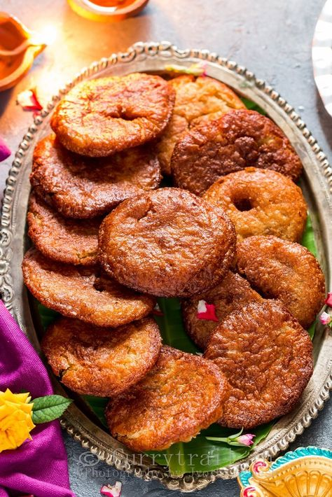

Kajjaya, a delectable South Indian sweet, holds a rich history deeply intertwined with the cultural and culinary heritage of the region. Originating from Karnataka, Kajjaya has become a beloved treat during festivals, weddings, and other special occasions. Historically, Kajjaya has roots in traditional Indian sweets, often prepared in homes as an offering to deities during religious ceremonies. The recipe has been passed down through generations, with each family adding its unique touch. The name "Kajjaya" is derived from the Kannada language, and its popularity has transcended regional boundaries, making it a cherished sweet across South India. The preparation of Kajjaya involves a combination of key ingredients, including rice flour, jaggery (a traditional unrefined sugar), grated coconut, and ghee (clarified butter). The dough is carefully crafted and shaped into small, round discs before being deep-fried to a golden brown perfection. The inclusion of aromatic spices such as cardamom enhances the flavor, creating a symphony of tastes that dance on the palate. What sets Kajjaya apart is its unique texture – a delightful crispiness on the outside giving way to a soft and sweet interior. The sweetness comes from the jaggery, which infuses the treat with a natural, earthy sweetness that is less intense than refined sugar. Kajjaya is not merely a sweet indulgence; it is a symbol of celebration and togetherness. Its presence in festivals like Diwali and weddings signifies the joyous moments that define South Indian culture. The preparation of Kajjaya is often a communal activity, bringing families and communities together in the spirit of sharing and festivity.
Kajjaya Recipe
Ingredients Required
1.25 cup rice (I used dosa rice)
1 cup jaggery
4 - 5 tsp ghee or coconut oil
2 tbsp sesame seeds (optional, I didn't use)
1 tbsp poppy seeds (optional, I didn't use)
2 cardamom
Oil or ghee for deep frying
Instructions

To begin with rinse and soak the rice for 2 hours.
Next drain the water completely and spread it on a cotton cloth for 15 minutes. This is done to remove excess water content. But please note that the rice should not be fully dried. It shall have some water content or I would say it should be half wet. Also please note that the time varies depending on the quantity of rice.
Transfer the slightly wet rice and the cardamom into a mixer grinder and dry grind it for few seconds.
Now transfer the ground rice powder into a box and close the lid and keep it aside until jaggery syrup is ready. Doing so will help to retain the moisture of the rice flour.
Next take 1 cup jaggery and 1/4 cup of water in a thick bottomed pan and keep it for boiling.
Next take 1 cup jaggery and 1/4 cup of water in a thick bottomed pan and keep it for boiling
Once it starts boiling with bubbles start checking for single thread or soft ball consistency. To check soft ball stage take water in a bowl and drop little jaggery syrup in the water. At one stage you will be able to make a soft sliding ball out of it. Reduce the flame. Kindly watch the video given above.
Immediately add in the rice flour and mix well. Switch off the stove. Optionally you can add 2 tbsp of white sesame seeds and 1 tbsp of poppy seeds. I didn't add.
You will get loose dough having thick paste consistency. Close the lid.
After 10 minutes transfer it into a box. Pour 4 - 5 tsp of oil or ghee on top, close the lid and rest it until cool. You can also rest it for a day for better results.
Once it is completely cool or after a day you can observe the dough has become more thick but still it will be very soft. Grease a thick plastic sheet (or banana leaf) with oil, scoop out a small lemon sized dough and place it on the sheet.
Pat it into a small thick circle.
Heat oil or ghee in a deep frying pan and carefully drop the athrasa or kajjaya into the oil. Fry one by one under low medium flame. It is like the oil should be hot enough but the frying should happen at low flame.
Take out the athrasa or kajjaya once the bubbles are stopped or once it reaches golden brown color. frying will happen very fast. It will not take much time. If you fry for more time then the kajjaya or athrasa will turn crispy so be quick.
Now once you take out the athrasa or kajjaya take one more flat spatula and press the kajjaya slightly. This is done to remove the extra oil.
Like this finish making all of them. Place them on a tissue paper. Once they are cool store them in a airtight container. Enjoy tasty kajjaya or athrasa. Wish you all very happy Deepavali.
 South Indian Recipes
South Indian Recipes